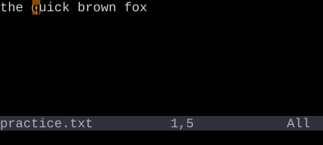
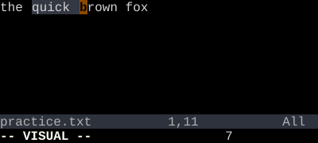

v enters character-wise Visual mode. Move to extend the selection. Press an operator (d, c, y, …) to act on it.
Visual mode flips the grammar around. Instead of "verb then noun" (dw), you do "noun then verb": select first, then act. v starts the selection, motions extend it, and an operator finishes the job.
Enter Visual mode
Key
Note
v
Select two words, delete them
Key
Note
v
w
w
d
Switch which end of the selection moves
Key
Note
o
v — character Visualo — switch endpoints
Reference
Key
Action
v
Enter character-wise Visual
o
Swap cursor and anchor
Esc
Leave Visual without acting
gv
Re-select last visual range
`<, `>
Marks for selection start/end
Worked example — v and motion
Character-wise visual selection.
Step 1 ·

Step 2 · vw · vw — selected through next word.

Step 3 · d · d — delete the selection.
Visual mode picks a range first, then you apply an operator. Useful when the right motion is hard to compose.